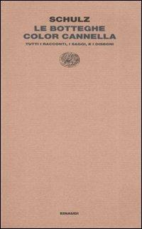
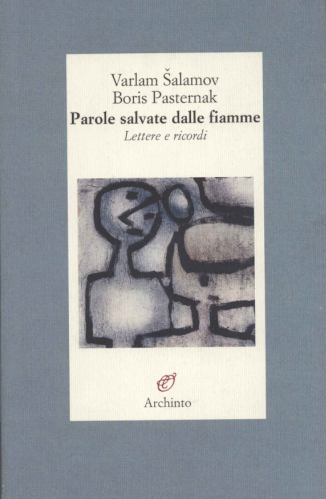
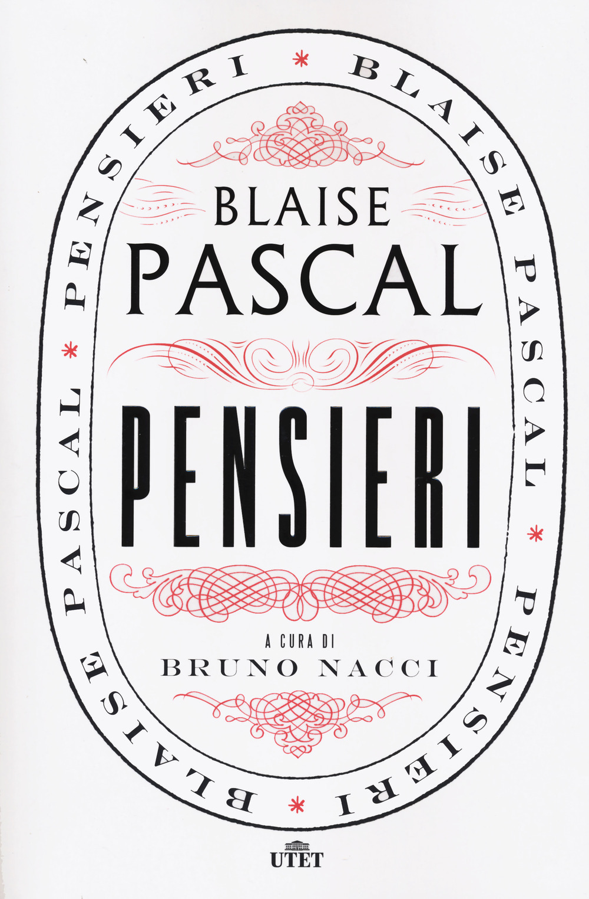
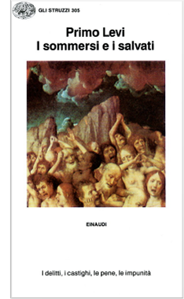
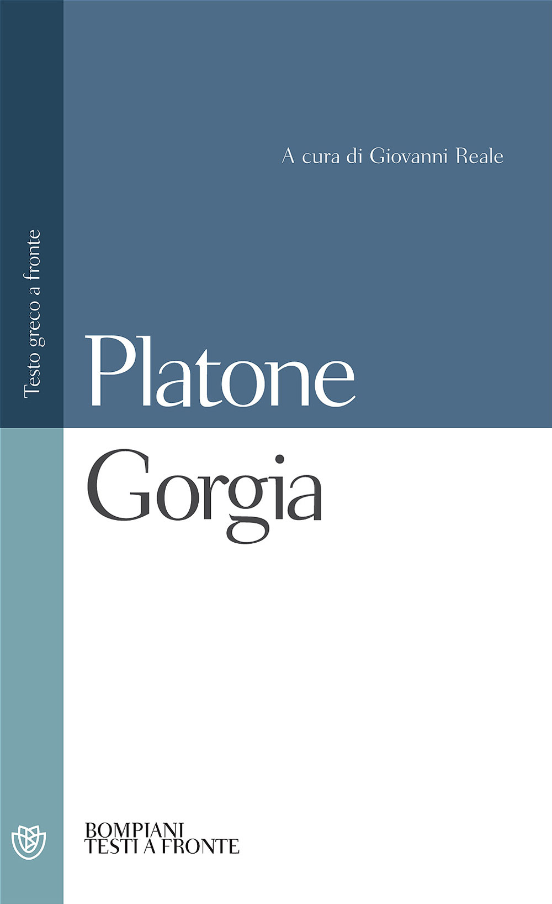
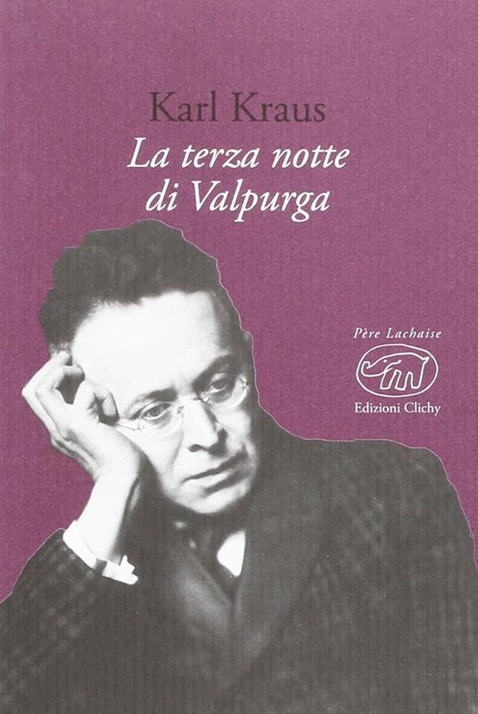
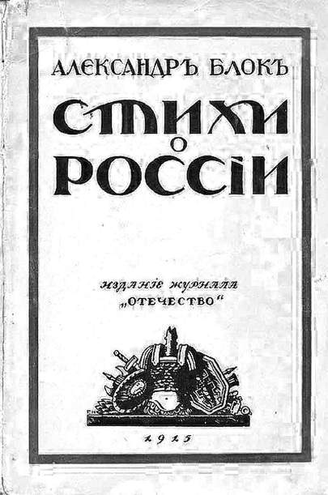
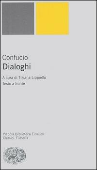

38:30 · 11 OPERE
Sulla morte di Bruno Schulz: considerazioni sullo svuotamento del mondo
Il filo del discorso
L’assassinio di Bruno Schulz nel ghetto di Drohobycz è il punto di partenza di una riflessione sulla violenza che riduce una persona a oggetto e distrugge, insieme alla sua vita, possibilità culturali irripetibili. Il relatore legge la vicenda come emblema di uno svuotamento del mondo: alla sensibilità dello scrittore contrappone l’arbitrio di chi può uccidere perché protetto da un apparato. Un passo delle Botteghe color cannella diventa immagine della fragilità del reale, mentre il ricordo di intellettuali perseguitati allarga il discorso alle perdite provocate dai totalitarismi. La testimonianza di Šalamov e la canna pensante di Pascal aprono poi la domanda su ciò che il pensiero può opporre alla forza. Il centro del contributo interroga i limiti della spiegazione del male e la differenza fra analizzare una atrocità e renderle giustizia. Primo Levi, Socrate, Kraus e il contrasto confuciano fra giusto e utile accompagnano una seconda domanda: che cosa distrugge il carnefice anche in se stesso? La conclusione collega cultura, memoria e giustizia attraverso Giordano Bruno e la giustizia nazista. Le analogie con la modernità e l’idea del male come vuoto appartengono all’interpretazione del relatore; la scheda distingue la storia documentata, le citazioni riconoscibili e i dettagli narrativi non accertati.
I libri nel discorso

Ferdydurke
Copertina: Il Saggiatore, 2020; traduzione Irene Salvatori e Michele Mari, cura e postfazione Francesco M. Cataluccio.
Immagine autentica dell’opera, controllata visivamente; l’edizione di riferimento non è attribuita al filmato.
Autore Gombrowicz e Ferdydurke espliciti, nella presentazione dell’amico di Schulz.
Passaggio 1:15 ↗ · Fonti e libro ↗
Le botteghe color cannella
Raccolta ampliata: racconti, saggi e disegni: Copertina del volume ampliato Le botteghe color cannella. Tutti i racconti, i saggi e i disegni, Einaudi, Letture Einaudi, 2008, 530 pagine, a cura di Francesco M. Cataluccio, traduzioni di Anna Vivanti Salmon, Vera Verdiani e Andrzej Zielinski, ISBN 9788806193638. Non coincide con la sola raccolta originale Sklepy cynamonowe, uscita con data 1934.
Piccola copertina autentica intera Einaudi, 200 × 321 pixel, rosa con autore Schulz, titolo, sottotitolo e marchio editoriale; non è un segnaposto. Il volume comprende anche testi ulteriori rispetto alla raccolta citata: non sono tutti conteggiati come opere nominate. Il passo sulla realtà sottile come carta è nel racconto Ulica Krokodyli, senza certificare dal solo video una particolare traduzione italiana o tiratura.
Titolo esplicito; il passo sulla realtà sottile come carta è nel racconto Ulica Krokodyli.
Passaggio 5:33 ↗ · Fonti e libro ↗
Lettera a Boris Pasternak dell’8 gennaio 1956
Identificazione probabile
Raccolta: Parole salvate dalle fiamme: Copertina della raccolta Parole salvate dalle fiamme. Lettere e ricordi, Varlam Šalamov e Boris Pasternak, Archinto, Milano, 2009, a cura di Luciana Montagnani, 198 pagine, ISBN 9788877685520. Prima edizione italiana del carteggio 1952–1956: Archinto 1993. La voce riguarda la singola lettera, non l’intero carteggio.
Fotografia autentica della copertina Archinto: fondo blu-grigio, riquadro crema, nomi dei due corrispondenti, titolo, sottotitolo Lettere e ricordi e marchio. La lettera dell’8 gennaio 1956 è identificata dal passo originale; il video non pronuncia il titolo della raccolta, né si certifica che questa sia la traduzione usata. La presenza di Pasternak in copertina indica il carteggio, non la paternità del passo di Šalamov.
Passo sulla corruzione della mente e del cuore: testo riscontrato nella lettera a Pasternak dell’8 gennaio 1956, senza titolo o data pronunciati.
Passaggio 13:47 ↗ · Fonti e libro ↗
Pensieri
Copertina: UTET · a cura di Bruno Nacci · 2021
Copertina autentica dell’edizione di riferimento, non attribuita all’esemplare del video.
Pascal, Pensées e metafora della canna pensante espliciti; frammento Lafuma 200 / Brunschvicg 347.
Passaggio 15:07 ↗ · Fonti e libro ↗
Giobbe
Copertina del volume completo: San Paolo, 2014 · Nuova Versione dai Testi Antichi · edizione di riferimento
Giobbe è un libro della Bibbia. L’immagine mostra il volume completo San Paolo di riferimento, non un’edizione autonoma del singolo libro e non una versione identificata nella citazione.
Libro di Giobbe nominato nella tipologia delle risposte al male.
Passaggio 20:38 ↗ · Fonti e libro ↗
Genesi
Copertina: Einaudi, I libri della Bibbia / Einaudi Tascabili, 2000; introduzione di Steven Rose
Copertina dell’edizione autonoma Genesi, nella serie I libri della Bibbia, con introduzione di Steven Rose. Edizione scelta come riferimento iconografico; nessuna edizione è confermata nel video.
Genesi esplicita con parafrasi dell’inclinazione del cuore umano, Genesi 8,21.
Passaggio 20:48 ↗ · Fonti e libro ↗
I sommersi e i salvati
Identificazione probabile
Copertina: Copertina Einaudi, Gli struzzi 305, riprodotta e identificata dal Centro Internazionale di Studi Primo Levi come edizione del 1986, anno della prima pubblicazione. Nessun ISBN ricavato dalla sola immagine.
Copertina autentica del Centro Primo Levi, 234 × 380 pixel, bianca con nome, titolo, particolare figurativo, marchio Einaudi e sottotitolo I delitti, i castighi, le pene, le impunità. Il nome del file non determina il colore: l’immagine è stata vista intera. Il passo distingue vittima e responsabile; non si conserva come citazione corretta la ripetizione automatica di chi è ferito in entrambe le parti. Il titolo del libro è ricavato dal passo e non dichiarato pronunciato.
Citazione sulla memoria di chi è ferito e di chi ha ferito, riscontrata nel capitolo La memoria dell’offesa; titolo non pronunciato.
Passaggio 25:53 ↗ · Fonti e libro ↗
Gorgia
Identificazione probabile
Copertina: Gorgia, Bompiani, giugno 2001, a cura di Giovanni Reale, testo greco a fronte, 384 pagine, ISBN 9788845291111. Copertina ufficiale blu, bianca e verde acqua con titolo e autore; edizione di riferimento non identificata nel video.
Immagine autentica dell’opera, controllata visivamente; l’edizione di riferimento non è attribuita al filmato.
Tesi socratica del subire invece di commettere ingiustizia: corrispondenza con Gorgia 469c e 474b, titolo non pronunciato.
Passaggio 26:20 ↗ · Fonti e libro ↗
La terza notte di Valpurga
Copertina: Copertina Edizioni Clichy, Père Lachaise, 2016, traduzione di Paola Sorge, ISBN 9788867992799. Catalogo editore: uscita 19 maggio 2016 e 448 pagine; descrizione bibliotecaria: 443 pagine numerate. Opera scritta nel 1933 e pubblicata integralmente nel 1952.
Copertina autentica bordeaux con ritratto in bianco e nero di Kraus, autore, titolo e marchio Clichy, decodificata e ispezionata. Una precedente immagine di Un uomo allo zoo di Garnett, ricavata da un ISBN non pertinente, è stata respinta e registrata con il suo SHA: non è entrata nel repertorio. Edizione qui illustrata non assegnata al filmato.
Kraus, titolo e incipit su Hitler espliciti.
Passaggio 31:16 ↗ · Fonti e libro ↗
Nati negli anni sordi… (Roždënnye v goda gluchie…)
Identificazione probabile
Raccolta: Poesie sulla Russia (1915): Riproduzione della copertina della raccolta Stichi o Rossii (Poesie sulla Russia), Aleksandr Blok, edizione della rivista Otečestvo, Pietrogrado, 1915, grafica di Georgij Narbut. Immagine documentaria riprodotta nello studio IMLI del 2013, PDF p. 101, pagine stampate 200–201. La poesia è già pubblicata in Apollon, n. 10, 1914, p. 7.
Copertina autentica storica della raccolta che contiene la poesia, estratta intera come XObject dal PDF istituzionale e ispezionata: nome di Aleksandr Blok, titolo cirillico, editore Otečestvo e data 1915 visibili. Non è una copertina autonoma della poesia né un libro di Šalamov. La data di compimento del testo è 8 settembre 1914; la grafica e la provenienza sono documentate nello studio, senza affermare un esemplare fisico osservato nel video.
Versi attribuiti nel parlato a Šalamov ma corrispondenti alla poesia di Aleksandr Blok del 1914; tramite e traduzione non accertati.
Passaggio 33:11 ↗ · Fonti e libro ↗
Dialoghi (Lunyu)
Identificazione probabile
Copertina: Copertina Einaudi, Piccola biblioteca Einaudi, Nuova serie 325, 2006, traduzione e cura di Tiziana Lippiello, XXXVI + 245 pagine, testo cinese a fronte, ISBN 9788806183660.
Piccola copertina autentica Einaudi, 200 × 350 pixel, grigia con riquadri grigio e giallo, nome Confucio, titolo, curatrice e testo a fronte. La frase è identificata dal contenuto e dai termini cinesi deformati nell’ASR, non da titolo pronunciato. Il confronto riguarda orientamenti etici, non una classificazione clinica o biologica di persone. La richiesta locale al testo cinese ha mostrato una verifica di accesso e non viene dichiarata lettura locale riuscita; il passo è riscontrato nel testo indicizzato.
Distinzione tra junzi e xiaoren sul giusto e sul profitto, corrispondente a Lunyu 4,16; titolo non pronunciato.
Passaggio 33:37 ↗ · Fonti e libro ↗Minutaggi ricavati da testi automatici, da riascoltare. Le identificazioni probabili sono segnalate accanto ai libri.